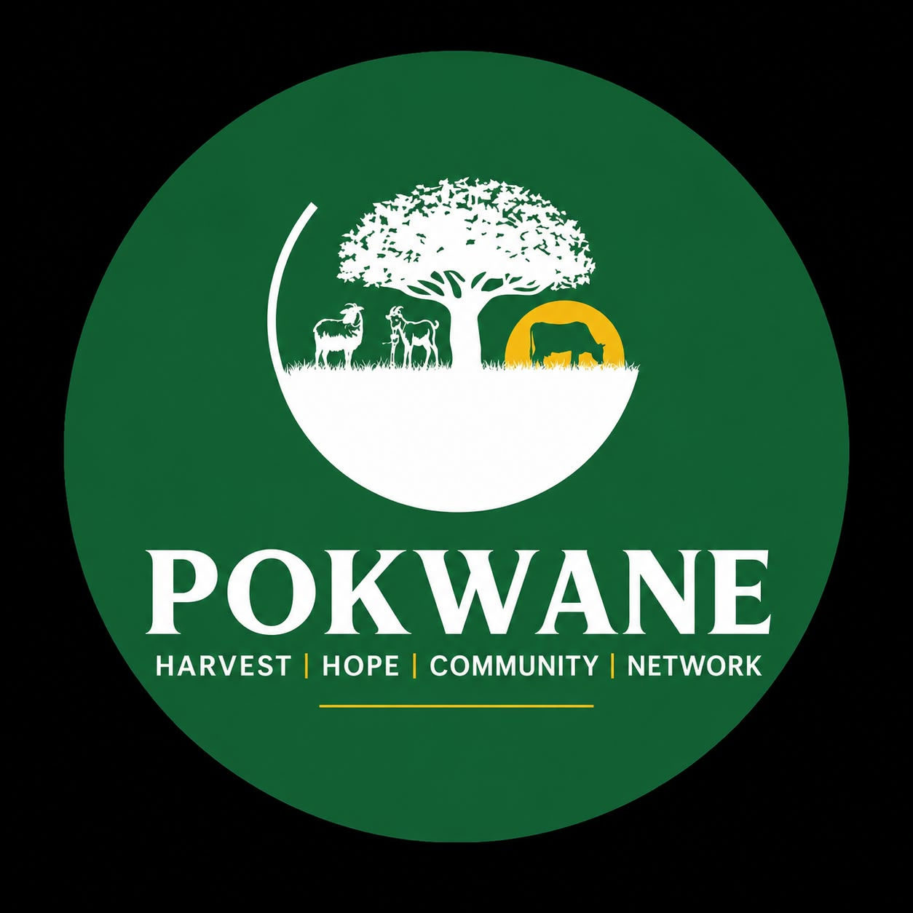
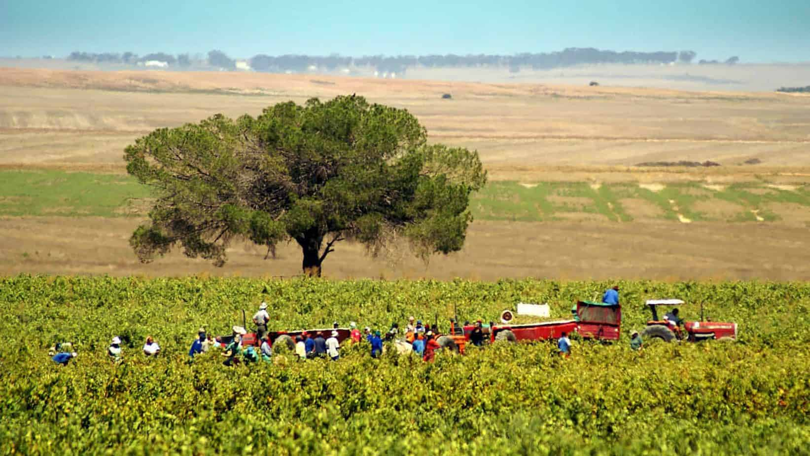

Smallholder Farmer Support & Training
We provide rural communal farmers with organic seeds, low-cost irrigation kits, and hands-on training in crop rotation, soil health restoration, and organic pest control.


Empowering smallholder farming comunities through hands-on programs, equipment access, and open research.
We provide rural communal farmers with organic seeds, low-cost irrigation kits, and hands-on training in crop rotation, soil health restoration, and organic pest control.
Regular field workshops organized across Pokwane and neighboring districts focusing on climate-resilient farming, water harvesting, and smallholder financial literacy.
Partnering with municipal stakeholders to map arable communal plots and optimize land utilization for sustainable yield improvements.
We believe in sharing knowledge. Download our featured district case studies and municipal development frameworks below:
Title: Understanding the Drivers of Production in South Africa Farming Systems (Vhembe District Case Study)
An in-depth analysis of crop yields, smallholder challenges, and agricultural productivity in Limpopo.
Download PDF ReportTitle: Sekhukhune District Spatial Development Framework Review
A regional planning framework review highlighting land use, agricultural zoning, and community development pathways.
Download PDF Framework